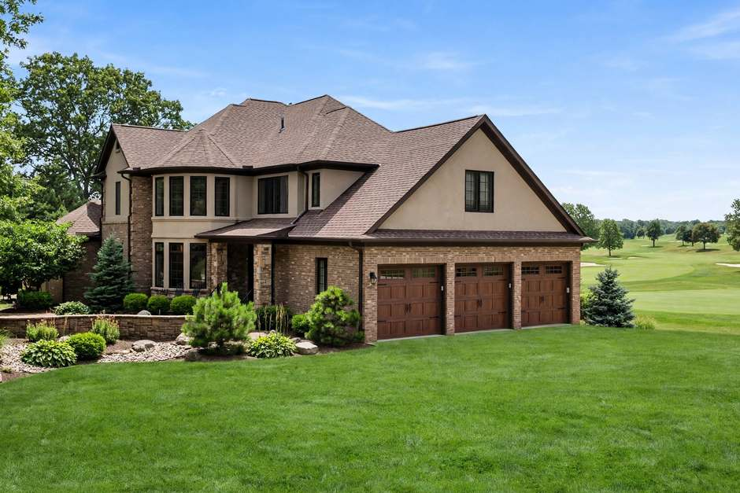
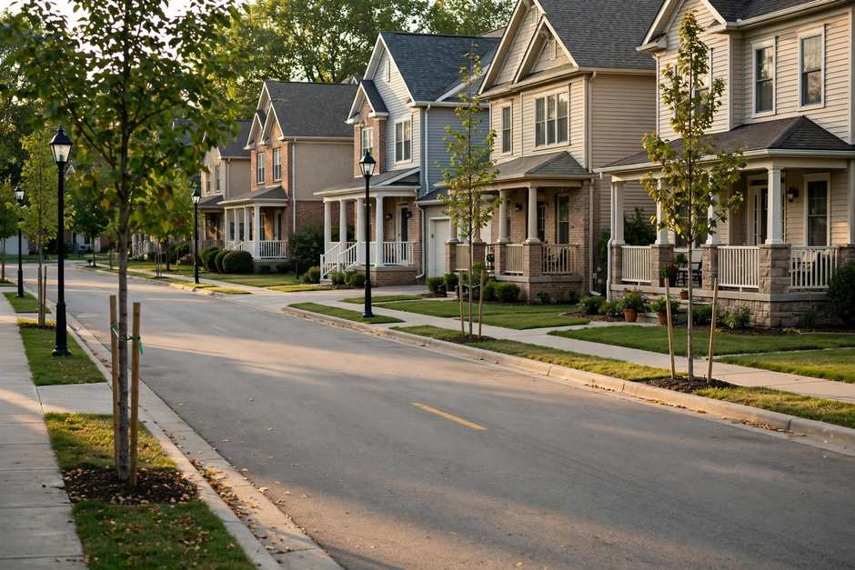

Planned Subdivision, Belleville, Illinois
Plumbing Services in Reunion, Belleville, IL
Hinkle Plumbing Company serves Reunion from 1610 W Main St, Belleville, IL 62220. This traditional neighborhood design subdivision holds 2000s-era homes on a closer-spaced street pattern, and its copper and PEX pipe materials call for first-cycle checks rather than repiping. Call (618) 677-6556 to discuss a problem.
Call (618) 677-6556Monday through Friday, 8:00 AM to 4:30 PMTraditional neighborhood design; 2000s-era homes
A Traditional Neighborhood Design Subdivision
2000s homes on a traditional street pattern
Reunion is a plan-named subdivision described in the City comprehensive plan as higher-density, traditional neighborhood design homes with no commercial mix. Homes date to the 2000s, and the subdivision originated through a Planned Unit Development process. Reunion Boulevard and Reunion Drive form the subdivision's spine, and filing names such as Celebration, Independence, Liberty, and Traditions mark phases within one subdivision, not separate neighborhoods. The plan's traditional neighborhood design description is used as written, with no lot-size, setback, or garage detail added, since none was recovered. Pipe materials are the 2000s mix of copper or PEX supply with PVC drains, so fixture and appliance failures arrive as first-cycle work, with manifold and fitting checks on PEX-era homes. Whether Planned Unit Development conditions affect exterior work is verified per address, and no association claim is made either way.
Explore Reunion services
Hinkle Plumbing Company2000s-era homes along a traditional neighborhood street in Reunion.
Services for This Subdivision
Plumbing services for 2000s homes
Services below are scoped against first-cycle failures and PEX-era materials in 2000s homes.
01
Residential Plumbing
Whole-home plumbing for 2000s houses, from fixture repairs to supply and drain questions. Scope follows the materials present and the first-cycle pattern of the era.
02Plumbing Repairs
Fixture, valve, and appliance-connection repairs are the steady pattern in homes of this era. Each repair follows detection findings and the condition of the adjoining pipe.
03Leak Repair
Leaks at manifolds, fittings, and appliance connections suit PEX-era checks. Repairs follow the detection findings, with fitting condition checked across the manifold and at each appliance connection.
04Drain Cleaning
Grease, scale, and everyday blockages collect in PVC drains. Clearing is matched to the material, and a clog that returns points toward a camera inspection.
05Water Heater Repair
First-cycle water heater failures arrive as tanks age in 2000s homes. Repair-or-replace discussions weigh tank condition, venting, and the permit rule for hot water heaters.
06Sewer Camera Inspection
A camera pass records the lateral run and shows joints, offsets, and breaks before excavation is discussed. Footage also establishes defect position relative to the property line.
Subdivision Realities
Design pattern, filing names, and PUD origin
A traditional neighborhood design pattern, many filing names, and a Planned Unit Development origin shape work in this subdivision.
Belleville's traditional neighborhood design exemplar
The City comprehensive plan names Reunion as its traditional neighborhood design case: higher-density homes with no commercial mix, a deliberate contrast to both the 19th-century grid and the large-lot subdivision pattern. Closer spacing implies shorter service and lateral runs than large-lot subdivisions as layout logic only, not as a surveyed fact. How we help: Layout expectations are treated as logic to verify, and camera inspection confirms the actual service and lateral runs at each address before scope is set.
One subdivision, many filing names
Celebration, Independence, Liberty, and Traditions appear in subdivision records as phases and filing names within Reunion, alongside Reunion Phase 03. Treating any filing name as a separate neighborhood would split one subdivision into several invented areas, so this page keeps them together. How we help: Filing names are used only as plat references, and scope follows the address and its build year, not the phase label attached to the filing.
Planned Unit Development and first-cycle work
Reunion originated through a Planned Unit Development process, and whether its conditions affect exterior work is verified per address. Homes from the 2000s are in their first water heater, fixture, and valve cycle, with manifold and fitting checks suited to PEX-era construction and no repiping cohort. How we help: PUD conditions are checked before exterior work begins, and first-cycle replacements are scoped from the fixtures and materials present in the house at that address.
Signs to Note
Signs that point toward first-cycle failures
A small visible symptom can point to a bigger pattern.
Fixtures that drip or stick
First-cycle fixture failures show as drips, sticking handles, and worn cartridges. Repairs follow the fixture type and the condition of the supply connection behind it.
Hot water that fades
Tanks in their first cycle develop sediment, anode wear, and fitting leaks as they age. Tank condition and venting are checked before repair-or-replace scope is set.
Pressure shifts at single fixtures
A single fixture with weak flow points toward a valve, cartridge, or local restriction. Pressure across the house shows whether the cause is local or system-wide.
Dampness near manifolds or fittings
PEX-era homes route supply through manifolds and fittings that deserve a check when dampness appears near them. Detection narrows the fitting before surfaces are opened.
Scope and Cost
What shapes the cost of a job here
Build year, fixture age, and PUD conditions set the scope of work in this subdivision.
Diagnosis first
Detection findings and fixture checks establish the failing part and its material. Findings are discussed by phone during office hours, and scope follows the evidence rather than assumption.
Repair in place
First-cycle fixture and fitting failures are often handled as repairs. Material, access, and any PUD condition are part of the scope discussion for each address.
Planned replacement
Water heaters and fixtures at end of life are scoped as replacements, with sizing, permits, and restoration discussed together. Call (618) 677-6556 to discuss a specific address.
Subdivision Orientation
Orientation points from the subdivision record
No standalone landmarks were verified for this subdivision, so the orientation points below come from the subdivision record itself.
Reunion Boulevard and Reunion Drive
Reunion Boulevard and Reunion Drive form the spine of the subdivision and the reference for addresses within it. No cross-street boundary was recovered, so none is drawn here.
Phase Filing Names
Celebration, Independence, Liberty, and Traditions are filing and addition names within one subdivision, alongside Reunion Phase 03. They serve as plat references, not as separate neighborhoods.
Traditional Neighborhood Design Street Pattern
The plan describes higher-density, traditional neighborhood design homes with no commercial mix. The street pattern follows that description, with closer spacing than the large-lot subdivisions elsewhere in the city.
2000s-Era Homes, Including Phase 03
Sampled homes date to the 2000s, including a 2006 build in Reunion Phase 03. Build year is verified per address, since phases span more than one year.
Coverage
Where this page applies
This page covers the Reunion subdivision in Belleville, Illinois, as one plan-named traditional neighborhood design community. No cross-street boundary was recovered, so none is drawn, and phase filing names are treated as parts of one subdivision. Work is discussed by phone during office hours, and no ZIP code is used here as a service boundary.
Streets and landmarks: Reunion Boulevard, Reunion Drive
Check my address →
1234
Office: 1610 W Main St, Belleville, IL 62220Call (618) 677-6556 Monday through Friday, 8:00 AM to 4:30 PM. Closed Saturday and Sunday.
Reviews from Google
What Customers Say on Google
★★★★★
“Very prompt and responsive, the worker was friendly and informative! Will use this company again!”
★★★★★
“Don did an outstanding job for me when I needed him and highly recommend his business”
★★★★★
“Rated 5.0 out of 5 across 3 Google reviews, all five stars.”
Nearby Areas
Other documented Belleville areas

The Orchards
A planned subdivision founded in 1991 with an 18-hole golf course and custom homes on large lots.
Old Belleville Historic District
The east-side historic core with German street houses and row houses from 1830 to 1900 on narrow lots.Hexenbuckel Historic District
The north-side pre-Civil War district on the North Illinois Street hump, with a local designation from 1991.Questions
Questions about plumbing in this subdivision
Our team can help if your question is not answered here.
Call (618) 677-6556Are Celebration, Independence, Liberty, and Traditions separate neighborhoods?
No. Those names are phases and filing names within the single Reunion subdivision, alongside Reunion Phase 03. Treating them as separate neighborhoods would invent areas that do not exist as distinct communities. This page keeps them together under Reunion, and filing names are used only as plat references for an address.
Does the Planned Unit Development origin affect plumbing work?
Reunion originated through a Planned Unit Development process, and whether PUD conditions or covenants affect exterior work is verified per address before exterior scope is set. Interior work is discussed on its own terms. No homeowners association claim is made either way, since none was evidenced.
Do plumbing jobs here need a permit?
The City of Belleville requires a permit before plumbing work begins (§152.05(A)); direct replacement of a toilet, sink, faucet, or other appliance is exempt, except hot water heaters require an electrical or gas permit (§152.05(B)(3)). Permit questions for a specific job are discussed by phone during office hours.
What pipe materials should be expected in Reunion homes?
Homes from the 2000s carry the era-typical mix of copper or PEX supply lines with PVC drains, so first-cycle fixture, appliance, and water heater failures are the expected pattern, with manifold and fitting checks on PEX-era homes. Materials are confirmed per address, since phases span more than one build year and no repiping cohort applies.
Mon–Fri 8:00 AM–4:30 PM
Discuss a plumbing problem in Reunion
Call Hinkle Plumbing Company at (618) 677-6556 Monday through Friday, 8:00 AM to 4:30 PM. Closed Saturday and Sunday. Describe the problem, the age of the house where that detail is available, and what has changed, and the scope factors will be discussed from there.

Talk with the local team
Contact Hinkle Plumbing Company
Call (618) 677-6556 during office hours, Monday through Friday, 8:00 AM to 4:30 PM. Tell us what is happening and we will talk through the next step.